波动突然放大，突破信号就一定可靠吗？
明明是震荡结构，策略却一路追单、反复止损？
问题不在"少了一个指标"，而是策略一直在用同一个动作，对所有状态下的行情做出反应。今天拆开 CTA 最常被忽略的三个问题：
1. 当前市场是否处于适合开仓的正常状态？
2. 价格是否完成了具有方向性的有效突破？
3. 建仓后，如何让风险尺度固定，又能在异常时加快保护？
━━━━ 第一道闸门：市场状态 ━━━━
动图 1 ｜ 二维状态特征的构造原理
用两个特征把当前市场放进一张二维状态平面：标准化收益冲击（用长期波动率衡量当前涨跌的反常程度）+ 短长波动结构（短期 10 根 vs 长期 63 根实现波动率的差）。两个特征组合后，马氏距离才能同时捕捉"涨跌异常"和"波动结构变化"。
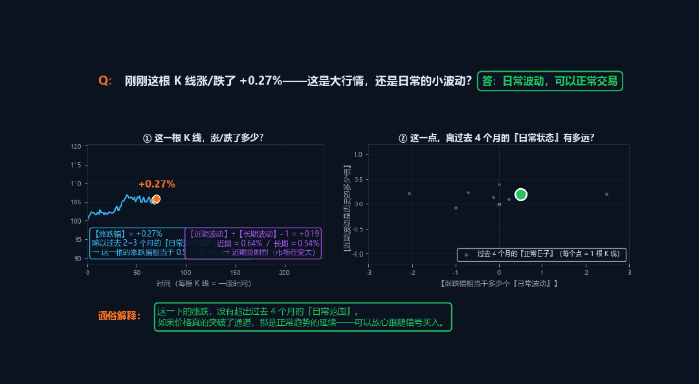
↑ 动图 1：看两个特征是什么、怎么算、在平面上怎么分布
动图 2 ｜ 四态风险闸门的工作流程
D² 距离低于 5.99 → 正常（允许开仓）；5.99–9.21 → 过渡（暂停新开仓）；≥ 9.21 → 压力锁定；连续 3 根 D² < 5.99 才解锁。关键点：所有历史基准都用 [1]，当前 K 线不能进自己的参考样本。
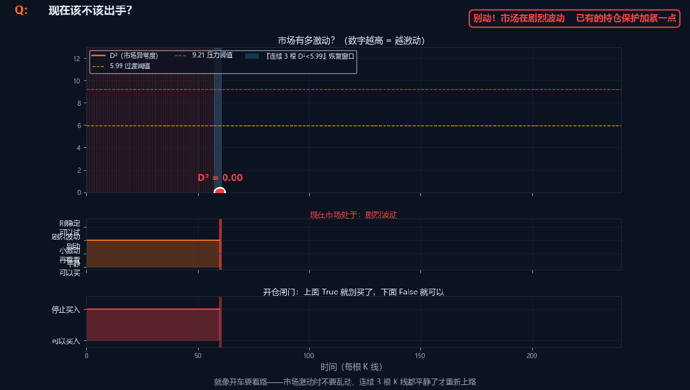
↑ 动图 2：四态转换、压力锁定、滞后解锁的完整流程
代码层面：二维马氏距离的实际计算
MeanF1、MeanF2 全部用 Average(ReturnShock[1], 126) 这种写法，当前 K 线不能进自己的参考样本。协方差矩阵加 0.0001 岭值，避免高度相关时矩阵接近不可逆。如果矩阵失效，直接按压力状态处理——保守失败机制，不假设当前状态正常。
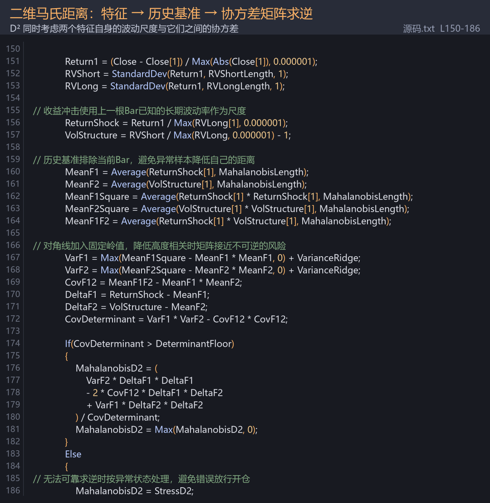
↑ 代码截图 2（TBQuant L150-186）：特征 → 历史基准 → 协方差求逆
━━━━ 第二道闸门：方向 ━━━━
动图 3 ｜ 收盘通道突破 + 0.10 ATR 缓冲 + 信号确认
马氏距离只负责"能否开仓"，多空方向完全由历史通道的收盘突破决定。通道外再加 0.10 ATR 缓冲，要求收盘价不仅越过历史极值，还要再走一小段波动距离，避免刚碰到通道边缘就触发假突破。信号在收盘确认，下一根 Bar 开盘执行。
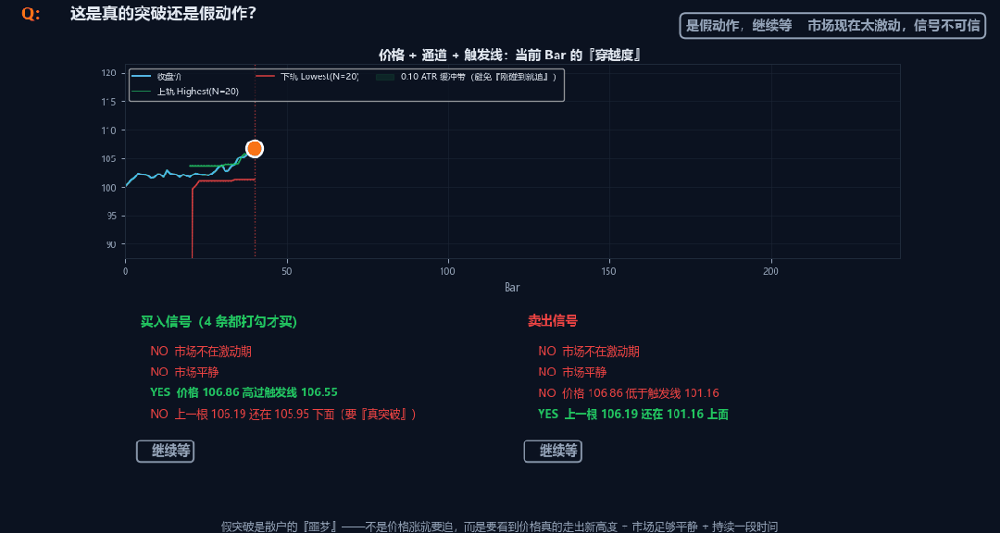
↑ 动图 3：通道怎么画、缓冲怎么加、信号何时确认
代码层面：风险状态机的 4 状态映射
把 D² 距离映射到 4 状态：RiskLock=True → 2（压力）；刚解锁 → 3（恢复确认）；D² ≥ 5.99 → 1（过渡）；其他 → 0（正常）。RiskLock 一旦开启不会因为下一根 Bar 略微回落就解除——必须连续 3 根 D² < 5.99。这是滞后恢复机制，减少状态边界反复抖动。
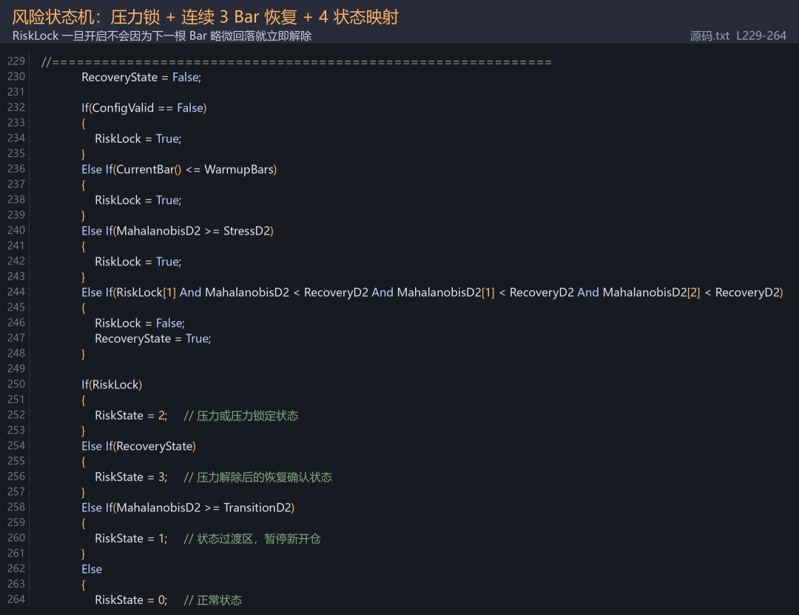
↑ 代码截图 3（TBQuant L229-264）：RiskLock + 4 状态映射
━━━━ 第三道闸门：风险 ━━━━
动图 4 ｜ 入场 ATR 冻结 + 单向跟踪 + 压力收紧
入场时冻结信号 Bar 的 ATR，整笔交易不再改变风险尺度。跟踪止损从初始止损出发，只能向盈利方向移动；常态跟踪距离 = 入场 ATR × 3.0；压力状态时收紧到 1.50 ATR。收紧是单向的，放宽永远不允许。
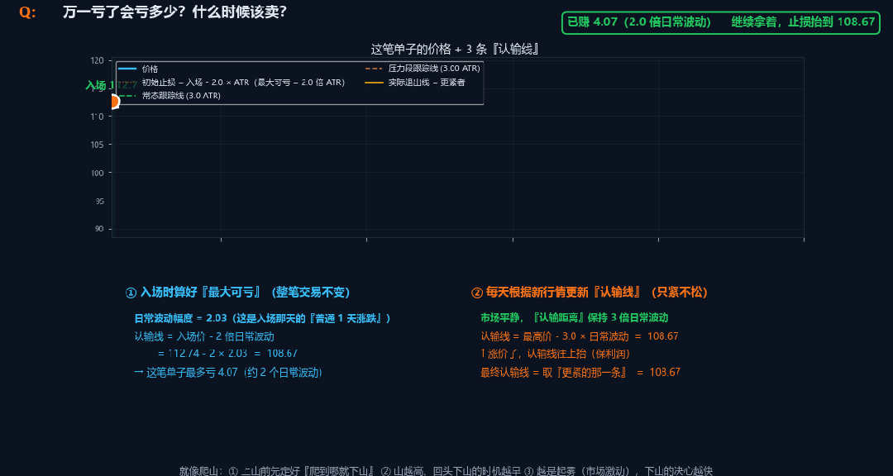
↑ 动图 4：入场冻结、跟踪只上移、压力主动收紧
━━━━ 三周期实测：TBQuant 真实回测 ━━━━
同一套三参数默认值（OptBreakLength=20、OptStopATR=2.0、OptTrailATR=3.0），不优化、不复盘调参。下方 6 张图直接来自 TBQuant 报告。
15 分钟 · 2024.01 – 2026.08
净值 1.69 · 年化 26.20% · 最大回撤 2.57% · 夏普 4.18
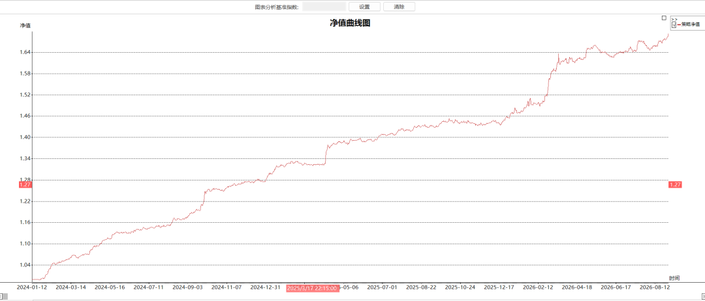
↑ 15 分钟｜净值曲线
15 分钟｜统计指标
胜率 49.66% · 盈亏比 1.54 · 盈利因子 1.52 · 交易 6182 次
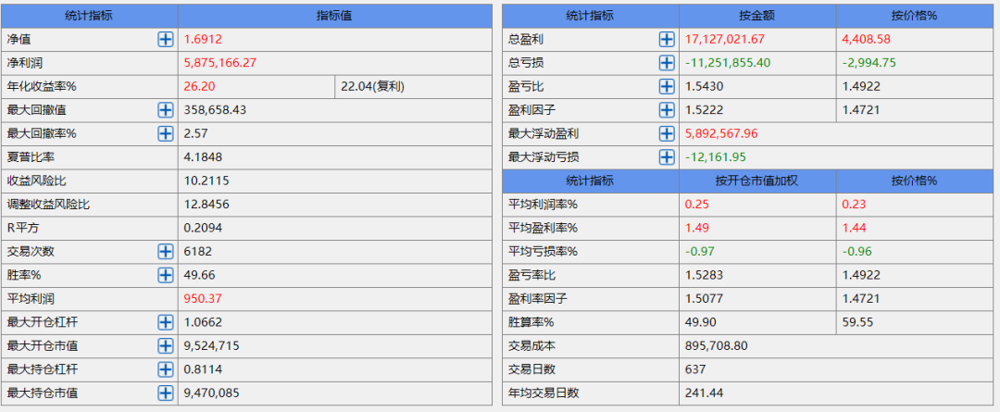
↑ 15 分钟｜统计指标
30 分钟 · 2024.04 – 2026.08
净值 1.65 · 年化 27.06% · 最大回撤 3.15% · 夏普 4.23
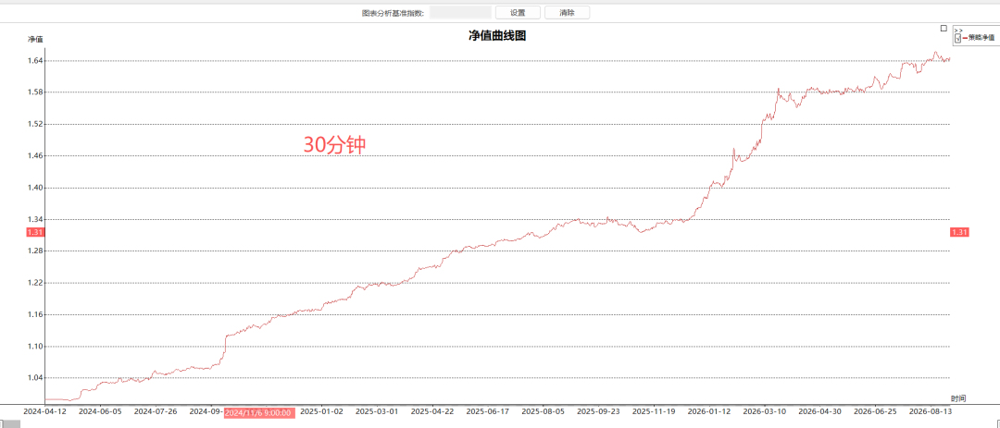
↑ 30 分钟｜净值曲线
30 分钟｜统计指标
胜率 52.42% · 盈亏比 1.78 · 盈利因子 1.96 · 交易 2604 次
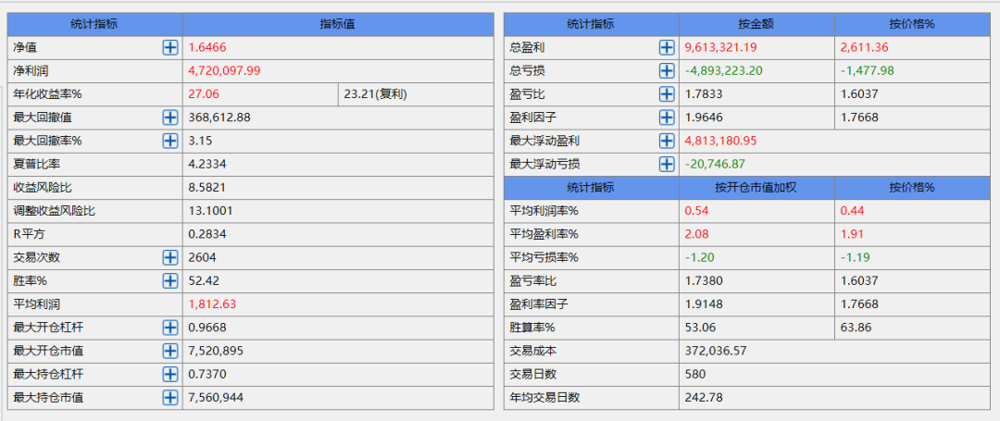
↑ 30 分钟｜统计指标
60 分钟 · 2018.01 – 2026.07
净值 2.26 · 年化 14.53% · 最大回撤 2.13% · 夏普 2.99
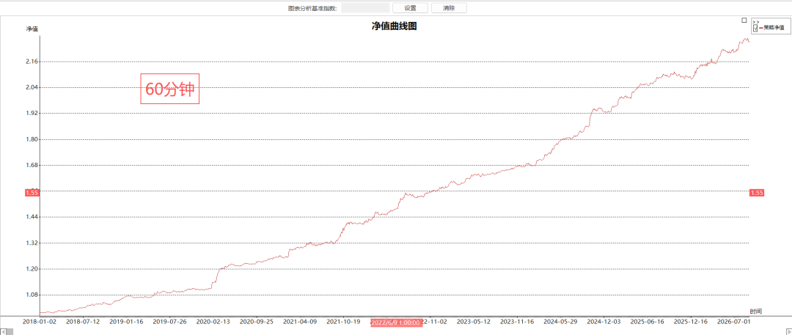
↑ 60 分钟｜净值曲线
60 分钟｜统计指标
胜率 50.24% · 盈亏比 1.68 · 盈利因子 1.69 · 交易 5295 次
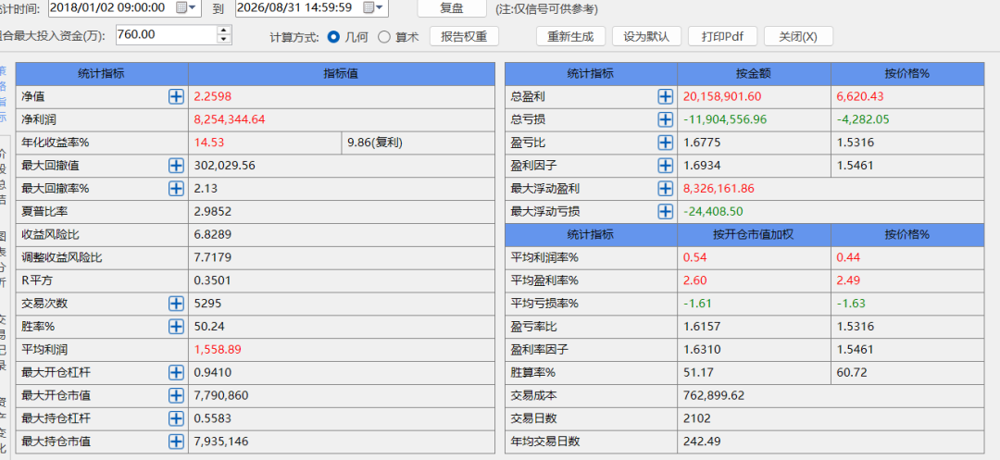
↑ 60 分钟｜统计指标
不同周期都呈现一致的形态：高夏普 + 低回撤 + 中等胜率。压力状态过滤掉了大量冲击行情，固定入场 ATR 把单笔潜在风险锁在已知范围，跟踪止损只收紧、不放宽，构成了稳健而非激进的资金曲线。
把判断交给状态，把方向交给突破，把风险冻结在入场那一刻。它面向商品及股指期货 CTA，不追求日内高频进出，也不试图用统计置信度替代逐 Bar 的真实执行。
SSQuant桌面端：IM888 · 60m · 2024-01-12 → 2026-08-25
在SSQuant桌面端的回测报告，同一份回测的 4 个视角（总览 / K 线 / 净值 / 月度）。
📊 回测总览
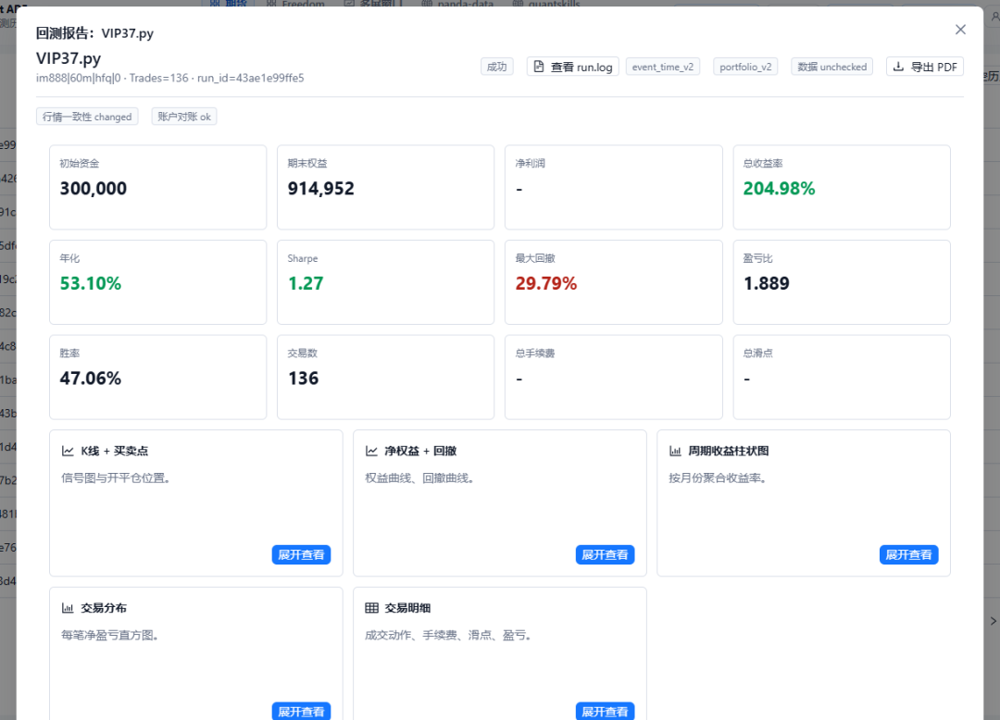
📈 K 线 + 买卖点（局部）
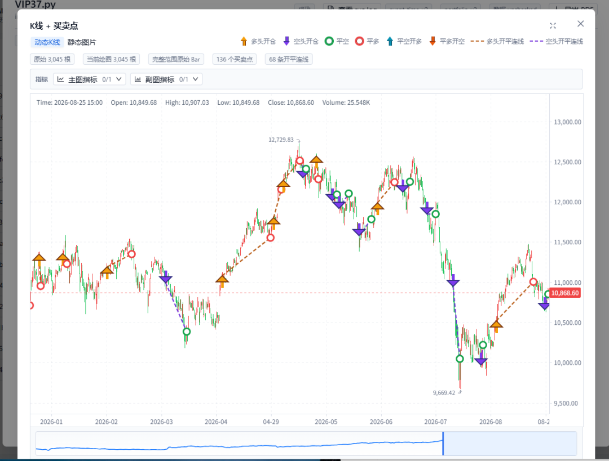
↑ K 线 + 买卖点：136 笔交易全部可视化标注
📉 净值曲线 + 回撤
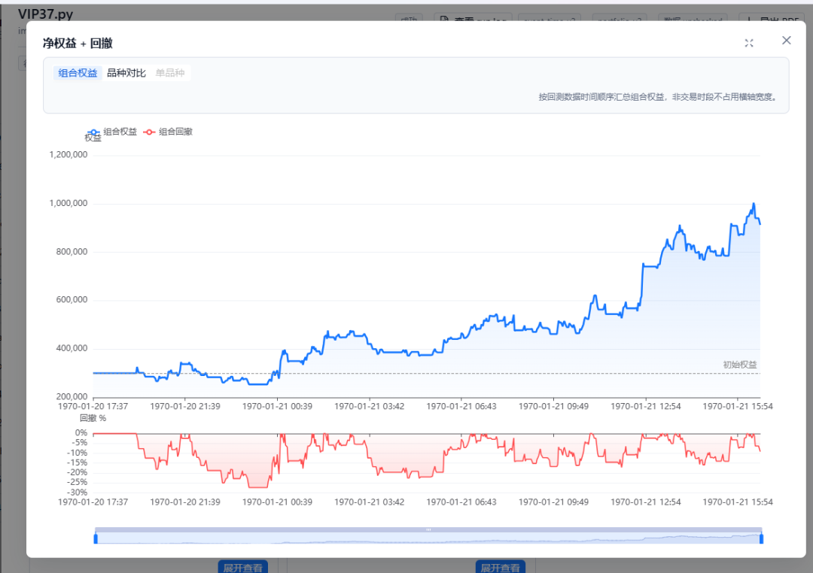
↑ 净值曲线 + 回撤：净值从初始 30 万爬到约 90 万
🗓 周期收益柱状图
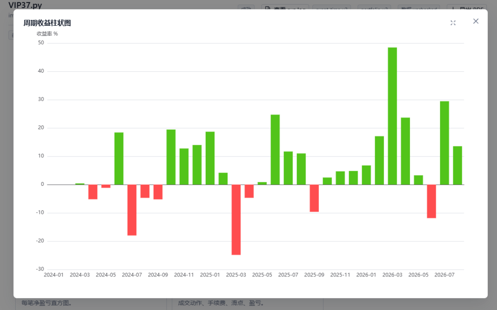
把判断交给状态，把方向交给突破，把风险冻结在入场那一刻。它面向商品及股指期货 CTA，不追求日内高频进出。
让马氏距离定义开仓闸门，让通道突破决定多空方向，让入场 ATR 锁住风险尺度。让压力收紧守护已有利润。
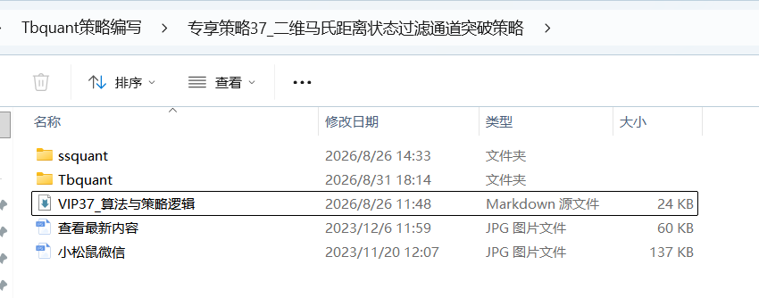
完整TBquant源码+python源码已经上传至2026俱乐部后台